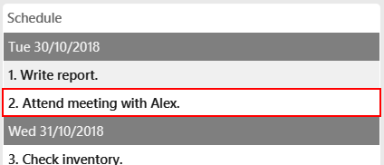
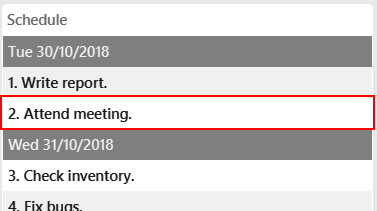
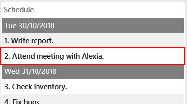
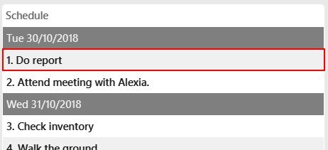

Overview
CorpPro is a desktop address book application which targets Corporate Users. It helps its users better manage their information to increase efficiency and to produce effective results. CorpPro’s features aid users to find relevant details quickly, in addition to being able to create a schedule to plan and set goals. Users can create and update entries in CorpPro through the command-line interface (CLI), as well as having an uncluttered user interface (UI) to display corresponding information. It is made using Java, a widely used programming platform.
Summary of contributions
-
Major enhancement: Added additional attributes to each contact in the address book
-
What it does: The following attributes have been added:
-
Position/rank
-
Tag priority
-
Key Performance Index (KPI)
-
Note/Description
-
-
Justification: As a corporate user with many contacts, there is a need have additional fields and attributes to catagorize or search for them quickly. Users can use tags to assign an importance level to each contact. The Key Performing Index (KPI) is also included in the attributes to enable managers or supervisors to rate or rank their employees.
-
Highlights: This feature required the creation of additional application programming interfaces (API) to facilitate other features such as listing or finding contacts via these additional attributes.
-
-
Major enhancement: Added schedule
-
What it does: Users are able to create activities or tasks and add them to their schedule in CorpPro. These activities are sorted by date and can be edited or deleted when completed. The schedule is also saved when the user closes the application
-
Justification: Corporate users may need to organise their assignments in a schedule to maintain a methodical work style to increase efficiency and not to neglect any important tasks.
-
Highlights: This feature required the creation of additional commands and the implementation of exporting the schedule to save its contents after the user has exit the application. In addition, a unique data structure had to be used to maintain a sorted schedule (by date).
-
-
Minor enhancement: The add command automatically parsers the contact’s name to capitalize the first letter of each word and remove additional spaces. This is to standardize contacts in the address book for a quick and easy reference.
-
Minor enhancement: Enhanced the edit command to edit all listed entries in one command. This enables users to quickly update contacts, listed by a similar category, all at once, saving time and increasing efficiency.
-
Code contributed: [RepoSense] [Pull Requests]
-
Other contributions:
Contributions to the User Guide
Given below are sections I contributed to the User Guide. They showcase my ability to write documentation targeting end-users. |
Schedule : schedule
The Schedule feature helps you remember important activities by listing out important events and dates!
To add an activity to your schedule:
Format: schedule-add d/DATE a/ACTIVITY
-
Example:
schedule-add d/30/10/2018 a/Attend meeting with Alex.
Adds activity "Attend meeting with Alex." on "30/10/2018" to your schedule:
To edit an activity from your schedule:
Format: schedule-edit INDEX a/ACTIVITY
-
Example:
schedule-edit 2 a/Attend meeting with Alexia.
To edit the following activity "Attend meeting." at index2:to "Attend meeting with Alexia.":

To delete an activity from your schedule:
Format: schedule-delete INDEX
-
Example:
schedule-delete 1
Deletes the following activity, "Do report", at index1in your schedule:
Contributions to the Developer Guide
Given below are sections I contributed to the Developer Guide. They showcase my ability to write technical documentation and the technical depth of my contributions to the project. |
Schedule
Current implementation
Updating the Schedule is facilitated by the ScheduleCommand class which extends the Command class.
ScheduleAddCommand, ScheduleEditCommand and ScheduleDeleteCommand further extends ScheduleCommand to add, edit and
delete entries in the Schedule respectively.
Activity
Each entry in the Schedule is an Activity. It consists of a String which takes the name of the activity
and the Date, of which the activity is due.
Schedule
Schedule is implemented with a TreeMap. It has the Date of activities as its key and a list of activities, which is due on the same
date, as its value.
Additionally, it implements the following main operations:
-
Schedule#add(Activity activity)— Add anActivitytoschedule. -
Schedule#delete(Activity activity)— Deletes anActivityfromschedule. -
Schedule#update(Activity target, Activity editedActivity)— Updates/edits anActivityin theschedule.targetis the activity to be edited.editedActivityis the new, changed, activity. -
Schedule#setSchedule(List<Activity> activities)— Setsschedulefrom alistof activities. This operation is executed when importing data from anXMLfile. This happens when you first start CorpPro. -
Schedule#getSchedule()— Returns the schedule with activities sorted byDateto be displayed in the GUI bySchedulePanelin theUIcomponent.
The schedule is instantiated in the AddressBook and have the main operations exposed in the Model interface as follows:
-
Model#addActivity(Activity activity)— ExposesSchedule#add(Activity activity). -
Model#deleteActivity(Activity activity)— ExposesSchedule#delete(Activity activity). -
Model#updateActivity(Activity target, Activity editedActivity)— ExposesSchedule#update(Activity target, Activity editedActivity). -
Model#getSchedule()— ExposesSchedule#getSchedule().
Storage
In addition to the CRUD (create, read, update and delete) functions, the schedule is also saved to an XML file
whenever you update it. This is facilitated by XmlAdaptedActivity which stores an Activity in an XML format.
XmlSerializableAddressBook then appends each XmlAdaptedActivity into a list and is saved in addressbook.xml.
Usage scenarios
Given below are examples of usage scenarios of how the schedule behaves when you carry out schedule commands.
Adding an activity:
Step 1. The user executes schedule-add d/01/01/2018 a/Complete report. to add an activity to their schedule.
Step 2. The user input is first parsed by AddressBookParser which creates a new ScheduleAddCommandParser object.
Step 3. The arguments, d/01/01/2018 a/Complete report., are then parsed by ScheduleAddCommandParser.
Step 4. ScheduleAddCommandParser checks the validity of the date and activity as input by the user. It then creates an
Activity object.
If the date or the activity name is not valid, an error would be returned to the user instead of creating an Activity object.
|
Step 5. ScheduleAddCommandParser then creates a new ScheduleAddCommand with the activity as its argument.
Step 6. ScheduleAddCommand is executed and calls Model#addActivity(activity) which creates the activity in the schedule.
Before calling Model#addActivity(activity), the address book is checked if it is encrypted with a password, via FileEncryptor.
It the address book is locked, an error would be displayed to the user instead of carrying on with the command.
|
Step 7. indicateAddressBookChanged() is called within Model#addActivity(activity) to raise an AddressBookChangedEvent, that the information within the
address book is changed.
Step 8. The UI object, schedulePanel which is subscribed to the event, receives this updated information and updates
the display to show the correct information to the user.
The following sequence diagrams shows you how the add operation works:
Figure 1. Interactions inside the Logic component for the schedule-add d/01/01/2018 a/Complete report. command.
|
The figure above illustrates the sequence from Step 1. to Step 5. |
Figure 2. Interactions inside the Storage component for the schedule-add d/01/01/2018 a/Complete report. command.
|
The figure above illustrates the sequence of Step 6. and Step 7. |
Figure 3. Interactions between the EventCenter, UI and Storage components for the schedule-add d/01/01/2018 a/Complete report. command.
|
The figure above illustrates the sequence of Step 8. |
Storage of each activity is facilitated by XmlAdaptedActivity which stores an Activity in an XML format. XmlSerializableAddressBook then appends each XmlAdaptedActivity into a list and is saved in addressbook.xml.
|
Editing an activity:
Step 1. The user executes schedule-edit 2 a/Interview intern. to edit an activity at INDEX 2 in their schedule.
Step 2. The user input is first parsed by AddressBookParser which creates a new ScheduleEditCommandParser object.
Step 3. The arguments, 2 a/Interview intern., are then parsed by ScheduleEditCommandParser.
Step 4. ScheduleEditCommandParser checks the validity of the index and activity as input by the user.
| If the activity name or index is not valid, an error would be returned to the user instead of editing an activity. |
Step 5. ScheduleEditCommandParser then creates a new ScheduleEditCommand with the INDEX and the new activity
String as its argument.
Step 6. ScheduleEditCommand gets target, the activity to be edited, via ScheduleCommand#getActivityFromIndex(model, index) and creates editedActivity, the new activity.
It then calls Model#updateActivity(target, editedActivity).
| If the index is not valid, i.e. out of range of the displayed schedule, an error would be returned to the user instead of editing an activity. |
Before calling Model#updateActivity(target, editedActivity), the address book is checked if it is encrypted with a password, via FileEncryptor.
It the address book is locked, an error would be displayed to the user instead of carrying on with the command.
|
Step 7. Model#updateActivity(target, editedActivity) updates the corresponding activity in the schedule.
indicateAddressBookChanged() is called within Model#updateActivity(target, editedActivity) to raise an AddressBookChangedEvent that the information within the
address book is changed.
Step 8. The UI object, schedulePanel which is subscribed to the event, receives this updated information and
updates the display to show the correct information to the user.
The following sequence diagrams shows how the edit operation works:
Figure 4. Interactions inside the Logic component for the schedule-edit 2 a/Interview intern. command.
|
The figure above illustrates the sequence from Step 1. to Step 6. |
Figure 5. Interactions inside the Model component for the schedule-edit 2 a/Interview intern. command.
|
The figure above illustrates the sequence of Step 7. |
The interactions between the EventCenter, UI and Storage components for editing an activity (Step 8.) are similar to adding an activity (see Figure 3.).
Deleting an activity:
Step 1. The user executes schedule-delete 2 to delete the activity at INDEX 2 in their schedule.
Step 2. The user input is first parsed by AddressBookParser which creates a new ScheduleDeleteCommandParser object.
Step 3. ScheduleDeleteCommandParser checks the validity of the index as input by the user.
Step 4. ScheduleDeleteCommandParser then creates a new ScheduleDeleteCommand with the INDEX as its argument.
Step 5. ScheduleDeleteCommand gets the activity, to be deleted, via ScheduleCommand#getActivityFromIndex(model, index) and calls
Model#deleteActivity(activity).
| If the index is not valid, i.e. out of range of the displayed schedule, an error would be returned to the user instead of deleting an activity. |
Before calling Model#deleteActivity(activity), the address book is checked if it is encrypted with a password, via FileEncryptor.
It the address book is locked, an error would be displayed to the user instead of carrying on with the command.
|
Step 6. Model#deleteActivity(activity) deletes the corresponding activity from the schedule. indicateAddressBookChanged() is called
within Model#deleteActivity(activity) to raise an AddressBookChangedEvent, that the information within the
address book is changed.
Step 7. The UI object, schedulePanel which is subscribed to the event, receives this updated information and updates
the display to show the correct information to the user.
The sequence of deleting an activity is similar to editing an activity. Instead of updating the activity , it is deleted (see Figure 4. and Figure 5.).
The interactions between the EventCenter, UI and Storage components for deleting an activity (Step 7.) are similar to adding an activity (see Figure 3.).
Design Considerations
Aspect: Data structure of Schedule
-
Alternative 1:
Listof Activities-
Pros: Easy to implement.
-
Cons: Need to sort each activity by its date whenever the schedule is updated.
-
Cons: Larger time complexity.
-
-
Alternative 2 (Current choice):
TreeMapof Activities-
Pros: Activities are automatically sorted by their dates whenever the schedule is updated.
-
Pros: Faster time complexity.
-
Cons: Harder to implement.
-
Cons: Larger space complexity.
-
Aspect: Date of Activity
-
Alternative 1:
Stringof date in DD/MM/YYYY format-
Pros: Easy to implement and do not need to parse user input.
-
Cons: Need to implement comparators to sort the dates of activity.
-
Cons: Not flexible. Unable to include and sort by time in future implementations.
-
-
Alternative 2 (Current choice): Usage of
java.util.Date-
Pros: Easy to implement.
-
Pros: Able to sort by time in future implementations.
-
Cons: Need to parse
Datewhen converting it toString. -
Cons: Need to parse user inputs to convert
StringtoDate.
-